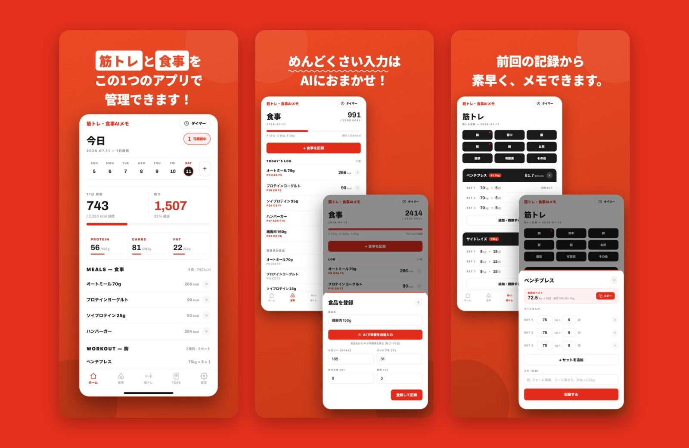

筋トレ・食事AIメモ

App Store URL
作品概要
カロリー記録と筋トレ記録を1つにまとめた、トレーニー向けのiOSアプリです。食品名を入力するだけでAIがカロリーとPFC（タンパク質・脂質・炭水化物）を推定し、筋トレは部位別に種目・重量・回数を記録できます。性別・年齢・身長・体重から1日の消費カロリー（TDEE）を診断し、目標カロリーも自動設定します。App Storeで公開しています。
アピール・こだわり
企画から実装、App Storeでの公開までをClaude Codeを活用して行いました。毎日の記録を続けやすいよう、一度登録した食品はワンタップで記録できるようにし、週・月カレンダーと当日の摂取カロリー・PFCの進捗をホーム画面で一目で確認できる構成にしています。推定1RMが自己ベストを超えるとお祝いするPR画面や、休憩タイマー、SNSで共有できるシェアカードなど、トレーニングが楽しくなる機能も取り入れました。
使用技術
Claude Code、AI（食品の栄養素推定）